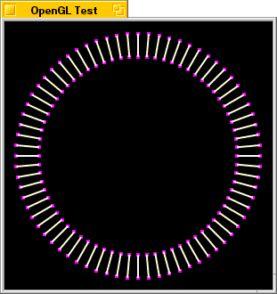

|
The BGLView class currently only supports double-buffered OpenGL contexts.
BGLView & BDirectWindowThe BGLView class provides a function, DirectConnected(), that your BDirectWindow::DirectConnected() function can call to handle the work of refreshing the OpenGL display.
Using OpenGLLong-winded discussion of how to use OpenGL is well beyond the realm of what this book is intended to cover; for complete information on OpenGL, see the OpenGL web site at http://www.opengl.org, where you'll find complete documentation and sample code. However, it's important to understand how OpenGL fits into the framework of a BeOS application. The example that follows will draw a pattern of lines around a central point, as seen in the picture below.  This code has been structured to make it relatively easy to port sample programs from the OpenGL web site; however, most of those samples use GLUT features, which aren't available yet in the BeOS implementation of OpenGL. In particular, most of the samples on the OpenGL web site use GLUT functions to handle user interface of some form. You'll have to add code for this yourself. The complete source code and project file can be found on the Be web site at <<<insert URL here>>>. The first thing that's needed, as always, is an application object, which we establish as follows:
class SampleGLApp : public BApplication {
public:
SampleGLApp();
private:
SampleGLWindow theWindow;
};
The SampleGLApp class has a constructor and a private pointer to the application's window. The constructor looks like this:
SampleGLApp::SampleGLApp()
: BApplication("application/x-vnd.Be-GLSample") {
BRect windowRect;
uint32 type;
// Set type to the appropriate value for the
// sample program you>re working with.
type = BGL_RGB|BGL_DOUBLE;
windowRect.Set(50,50,350,350);
theWindow = new SampleGLWindow(windowRect, type);
}
The first thing the constructor here does is set the variable type to describe the context we need. In this example, we want an RGB context with double-buffering on, so we specify BGL_RGB and BGL_DOUBLE. Then we create the window using the new function. The SampleGLWindow class is almost as simple:
class SampleGLWindow : public BWindow {
public:
SampleGLWindow(BRect frame, uint32 type);
virtual bool QuitRequested();
private:
SampleGLView *theView;
};
The constructor accepts a frame rectangle for the window and the OpenGL context type parameter that will be passed to SampleGLView's constructor. As always, QuitRequested() is overridden to post a B_QUIT_REQUESTED message to the application and return true. A pointer to the SampleGLView object is maintained as well. The constructor is fairly trivial:
SampleGLWindow::SampleGLWindow(BRect frame, uint32 type)
: BWindow(frame, "OpenGL Test", B_TITLED_WINDOW, 0) {
AddChild(theView=new SampleGLView(Bounds(), type));
Show();
theView->Render();
}
This code establishes the window, then creates the SampleGLView and adds it as a child of the window. Once that's done, the window is made visible by calling Show(). Finally, the SampleGLView's contents are drawn by calling the SampleGLView's Render() function. The meat of this program is in the SampleGLView class, which follows:
class SampleGLView : public BGLView {
public:
SampleGLView(BRect frame, uint32 type);
virtual void AttachedToWindow(void);
virtual void FrameResized(float newWidth, float newHeight);
virtual void ErrorCallback(GLenum which);
void Render(void);
private:
void gInit(void);
void gDraw(void);
void gReshape(int width, int height);
float width;
float height;
};
The SampleGLView class implements the constructor and reimplements three of the functions of the BGLView class: AttachedToWindow(), FrameResized(), and ErrorCallback(). An additional public method, Render(), will contain the actual code for drawing the contents of the view. In addition, there are three private methods that will contain the actual OpenGL calls for initializing, drawing, and resizing the BGLView's contents and a pair of values to represent the width and height of the BGLView. The constructor is very simple:
SampleGLView::SampleGLView(BRect frame, uint32 type)
: BGLView(frame, "SampleGLView", B_FOLLOW_ALL_SIDES, 0,
type) {
width = frame.right-frame.left;
height = frame.bottom-frame.top;
}
For the most part, the constructor defers to the BGLView constructor, setting the resizingMode to B_FOLLOW_ALL_SIDES and the OpenGL context type to the value specified. The only addition is that the width and height of the view are cached, based upon the frame rectangle specified. This is done because we'll need that information when the view is attached to the window, and the BGLView class doesn't include Width() and Height() functions. The AttachedToWindow() function, which is called when the SampleGLView is attached to its parent window, looks like this:
void SampleGLView::AttachedToWindow(void) {
LockGL();
BGLView::AttachedToWindow();
gInit();
gReshape(width, height);
UnlockGL();
}
This performs the initialization of the OpenGL context. First, LockGL() is called to lock the context and let the OpenGL Kit know which view should be targeted by future OpenGL calls. Then the inherited version of AttachedToWindow() is called to let BGLView set up the view normally. Once that's done, the gInit() and gReshape() functions are called. gInit(), as we'll see shortly, is responsible for initializing the context. gReshape() is called to configure the OpenGL coordinate system for the BGLView given the current width and height of the view. Finally, UnlockGL() is called to release the OpenGL context for the SampleGLView and to indicate that we're done using the context for the time being. The FrameResized() function is called automatically whenever the SampleGLView is resized:
void SampleGLView::FrameResized(float newWidth, float newHeight) {
LockGL();
BGLView::FrameResized(width, height);
width = newWidth;
height = newHeight;
gReshape(width,height);
UnlockGL();
Render();
}
As always, this function begins by locking the OpenGL context. It then calls the inherited version of FrameResized() to let BGLView perform whatever tasks it may need to do. The new width and height of the view are saved in the width and height variables, then the gReshape() function is called to adjust the OpenGL context given the new size of the view. Finally, the context is unlocked, and Render() is called to redraw the view's contents at the new size. Although the default ErrorCallback() function provided by BGLView would be acceptable, we include one of our own anyway:
void SampleGLView::ErrorCallback(GLenum whichError) {
fprintf(stderr, "Unexpected error occured (%d):n", whichError);
fprintf(stderr, " %sn", gluErrorString(whichError));
}
Note the use of the gluErrorString() OpenGL function to obtain an appropriate error message for the error code. You can use this function to avoid displaying error messages for errors that are acceptable or expected. The gInit() function sets up the OpenGL context and initializes variables that will be used later:
void SampleGLView::gInit(void) {
glClearColor(0.0, 0.0, 0.0, 0.0);
glLineStipple(1, 0xF0E0);
glBlendFunc(GL_SRC_ALPHA, GL_ONE);
use_stipple_mode = GL_FALSE;
use_smooth_mode = GL_TRUE;
linesize = 2;
pointsize = 4;
}
Briefly, this sets the clear color (the background color) of the view to black, configures the pattern for stippled lines and the blending function to be used when blending is enabled. It also selects not to use stippled lines (you can change this by setting use_stipple_mode to GL_TRUE) and to use anti-aliasing when drawing the lines (you can change this by setting use_smooth_mode to GL_FALSE). It also chooses to use 2 pixel wide lines, and 4 pixel wide points. This function doesn't call LockGL() and UnlockGL(), so they must be called by the calling function (and if you look at the AttachedToWindow() code above, you'll see that this is the case). There are some global variables used by this program (some of them accessed in the above code), so lets' take a quick look at those:
GLenum use_stipple_mode; // GL_TRUE to use dashed lines
GLenum use_smooth_mode; // GL_TRUE to use anti-aliased lines
GLint linesize; // Line width
GLint pointsize; // Point diameter
float pntA[3] = {
-160.0, 0.0, 0.0
};
float pntB[3] = {
-130.0, 0.0, 0.0
};
The varaibles use_stipple_mode , use_smooth_mode , linesize , and pointsize are discussed in the gInit() function above. The two float arrays define points in three-dimensional space. These points will be used as the endpoints of the lines drawn by the gDraw() function. The gDraw() function does the actual drawing into the OpenGL context:
void SampleGLView::gDraw(void) {
GLint i;
glClear(GL_COLOR_BUFFER_BIT);
glLineWidth(linesize);
if (use_stipple_mode) {
glEnable(GL_LINE_STIPPLE);
} else {
glDisable(GL_LINE_STIPPLE);
}
if (use_smooth_mode) {
glEnable(GL_LINE_SMOOTH);
glEnable(GL_BLEND);
} else {
glDisable(GL_LINE_SMOOTH);
glDisable(GL_BLEND);
}
glPushMatrix();
for (i = 0; i < 360; i += 5) {
glRotatef(5.0, 0,0,1); // Rotate right 5 degrees
glColor3f(1.0, 1.0, 0.0); // Set color for line
glBegin(GL_LINE_STRIP); // And create the line
glVertex3fv(pntA);
glVertex3fv(pntB);
glEnd();
glPointSize(pointsize); // Set size for point
glColor3f(0.0, 1.0, 0.0); // Set color for point
glBegin(GL_POINTS);
glVertex3fv(pntA); // Draw point at one end
glVertex3fv(pntB); // Draw point at other end
glEnd();
}
glPopMatrix(); // Done with matrix
}
Without getting too deeply-involved in OpenGL specifics, this code begins by clearing the context's buffer and setting the line width. It then enables the features selected by the use_stipple_mode and use_line_mode variables. Once that's done, it establishes a matrix to be used for rotating the lines and draws the lines with points at each end, drawing one every five degrees in a 360-degree circle around the center of the window. After drawing all the lines, the matrix is destroyed and the function returns. The gReshape() function handles adjusting the OpenGL context's coordinate system and viewport when the SampleGLView is first created, and whenever the view is resized:
void SampleGLView::gReshape(int width, int height) {
glViewport(0, 0, width, height);
glMatrixMode(GL_PROJECTION);
glLoadIdentity();
gluOrtho2D(-175, 175, -175, 175);
glMatrixMode(GL_MODELVIEW);
}
This code simply sets the viewport's coordinate system to reflect the new width and height of the view, and establishes a projection matrix such that no matter what the size and shape of the window, the center of the window is considered to be (0,0) and the window is 300 units wide and 300 units tall. This lets the rendering code draw without having to worry about scaling; OpenGL handles it for us. The details of how this works are, again, beyond the scope of this chapter. Finally, the Render() function is the high-level function used to actually update the contents of the SampleGLView whenever we wish to redraw it:
void SampleGLView::Render(void) {
LockGL();
gDraw();
SwapBuffers();
UnlockGL();
}
LockGL() is called to lock the context before calling gDraw() to do the actual OpenGL calls to draw the view. Then the SwapBuffers() function is called to swap the backbuffer that was just drawn to the screen, and the context is unlocked.
Adapting OpenGL Sample CodeThe program described above can easily be adapted to be used with other sample code from the OpenGL web site. First, replace the code in the gInit(), gDraw(), and gReshape() functions with the code from the Init(), Draw(), and Reshape() functions in the sample code (some of the sample programs give these functions slightly different names). Keep in mind that the current implementation of OpenGL under BeOS doesn't support single-buffered graphics, so you'll need to make whatever adjustments are necessary to use double-buffering. Once these functions have been implemented, copy any global variables from the sample program into your project. Finally, in the SampleGLApp constructor, fix the OpenGL context type and window size information to match that used by the sample program. You may also wish to implement code to handle user interface to let you configure the sample program; that's beyond the scope of this chapter—see the Interface Kit chapter of the Be Developer's Guide for further information on handling user input.
Hook Functions
ErrorCallback()
Constructor and Destructor
BGLView()
Initializes the view, then creates a new OpenGL drawing context and attaches it to the view. The type argument specifies the OpenGL type specification for the view:
~BGLView()
Disposes of the OpenGL context for the view.
Member Functions
AttachedToWindow()
Calls the inherited version of AttachedToWindow() and sets the view color to B_TRANSPARENT_32_BIT (this improves performance by preventing the Application Server from erasing the view, since OpenGL takes over responsibility for drawing into the view).
CopyPixelsIn() , CopyPixelsOut()
These functions copy pixel data into and out of the OpenGL draw buffer for the context. CopyPixelsIn() copies the entire contents of the source BBitmap into the OpenGL context, offset such that the top-left corner of the BBitmap is drawn at the point dest in the OpenGL buffer. CopyPixelsOut() copies from the OpenGL draw buffer into the specified BBitmap. The area copied is the size of the dest bitmap and contains all data from the specified source point to the bottom-right corner of the buffer.
RETURN CODES B_OK. The data was copied without error.
CopyPixelsOut() see CopyPixelsIn()
DirectConnected()
If the BGLView is in a BDirectWindow, you should call this from your BDirectWindow::DirectConnected() function to let OpenGL update the window properly.
Draw()
Refreshes the contents of the BGLView by copying the frontbuffer to the screen. If the view's color space is eight bits deep and the GL_DITHER OpenGL option is enabled, the display is dithered.
EmbeddedView()
Returns a pointer to an embedded view that encompasses the current OpenGL drawing buffer, as defined by OpenGL, for the BGLView. If the view is single-buffered, this will be the frontbuffer, and if the view is double-buffered, the embedded view will encompass the backbuffer.
EnableDirectMode()
Call this function to tell the BGLView whether or not it should render in direct mode. If you're using a BDirectWindow and want video refreshes to be done through the direct window method, pass true for enabled. If you don't want to use the direct window method, pass false.
ErrorCallback()
Called when an OpenGL error occurs. By default, this function invokes the debugger with an error message reading "GL: Error code $xxxx." You can (and probably should) reimplement this function to cope with errors more gracefully.
FrameResized()
Calls the inherited version of FrameResized(), releases tables that need to be recalculated, and resizes the OpenGL buffers. You can augment this function to perform other necessary tasks, such as adjusting your BGLView's coordinate system.
LockGL() , UnlockGL()
These functions lock and unlock the OpenGL context. You must lock the context before issuing any OpenGL commands, and unlock it when you're done—this is how OpenGL knows which context the drawing commands are intended for, since OpenGL itself isn't encapsulated within the BGLView class. For example:
LockGL(); /* lock the OpenGL context glEnable(GL_DITHER); /* turn on dithering support */ UnlockGL(); Failing to lock and unlock the context appropriately will result in unpredictable behavior and may cause your application to crash.
SwapBuffers()
Swaps the front buffer and back buffer, then redraws the contents of the BGLView. This function has no effect if the view is single-buffered. If vSync is specified and is true, the swap is synchronized with vertical blanking.
UnlockGL() see LockGL()
|
| The OpenGL Kit Table of Contents | The OpenGL Kit Index |
...in lovely HTML...
for BeOS Release 5.
Copyright © 2000 Be, Inc. All rights reserved..